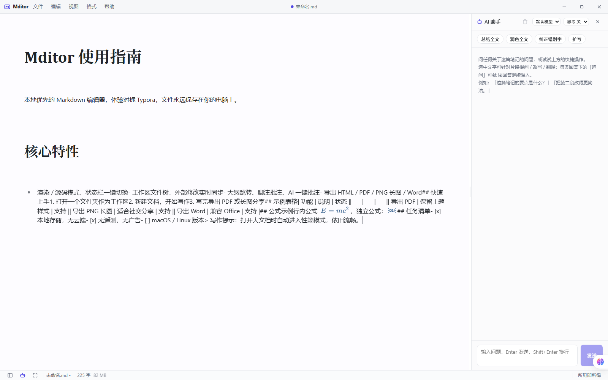
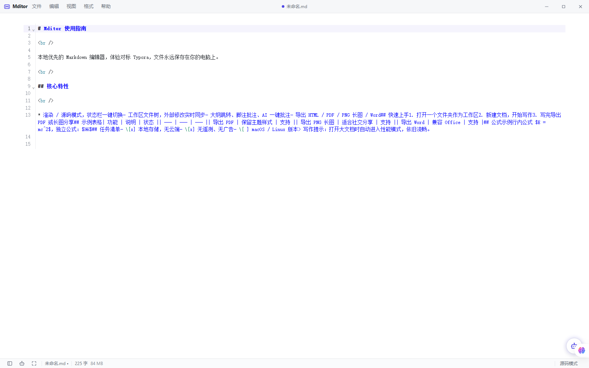

功能特性
为认真写作的人打造
所见即所得
Milkdown/ProseMirror 内核，支持 GFM、KaTeX 公式、代码高亮；所见即所得 / 即时渲染 / 源码三种模式一键切换。
工作区文件树
懒加载目录、批量操作、外部修改实时监听，改动自动同步并给出冲突确认。
AI 写作助手
OpenAI 兼容接口，自定义 BaseURL / Key / 模型，SSE 流式输出；选中文案即可改写、翻译、解释，一键批注。
大纲与批注
侧边栏大纲跳转，原生脚注语法的行内批注，AI 辅助批注，阅读与写作互不干扰。
多格式导出
HTML / PDF / PNG 长图 / Word (docx)，主题样式完整保留。
本地优先 · 隐私安全
设置与最近文件仅存于本机；严格 CSP、HTML 消毒、出站请求全部经 Rust 代理——没有遥测，没有数据上传。
操作说明
三步上手，零学习成本
打开文件夹
「文件 → 打开文件夹」选择你的笔记目录，工作区文件树自动加载，支持拖入 .md 文件快速打开。
开始写作
所见即所得，像用 Word 一样写 Markdown：表格、公式、任务清单、代码块全部实时渲染。
一键导出
写完即可导出 PDF / PNG 长图 / Word / HTML，主题样式完整保留，分享或投稿都方便。
核心优势
- 5 MB 安装包，秒开
- 本地优先，文件永远属于你
- 零遥测，无广告无上报
- AI 助手，自带多模型预设
- 大文档不卡，性能模式兜底
- 完全开源，MIT 协议

专注写作
干净的主编辑区，标题、加粗、链接、任务清单即输即得；状态栏显示字数与编辑模式，侧边栏一键收起。

大纲导航
侧边栏大纲自动提取全文标题，长文结构一目了然，点击即可跳转；批注、文件树、最近文档同样一键切换。

AI 助手
OpenAI 兼容接口，内置 DeepSeek / 智谱 / Kimi / OpenRouter / Ollama 等预设；选中文字即可改写、翻译、解释，一键生成批注。

三种编辑模式
所见即所得 / 即时渲染 / 源码模式，状态栏一键切换：写初稿用所见即所得，精确控制格式切源码，快速浏览用即时渲染。
支持本项目
Mditor 完全免费。如果它帮到了你，欢迎请作者喝杯咖啡
微信 / 支付宝赞赏码